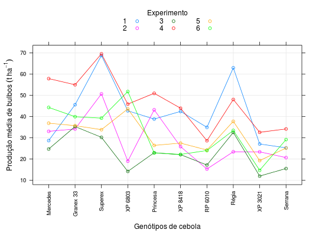

Grupo de experimentos de competição de genótipos de cebola realizado por Santos (2003). O delineamento considerado em cada ensaio não foi informado.
Um data.frame com 60 observações e 3 variáveis, em que
expergenotprodBANZATTO; KRONKA (2013), Quadro 8.4.1, pág. 200.
Santos, G. M. (2003). Adaptabilidade e estabilidade de genótipos de cebola. Tese (Doutorado em Genética e Melhoramento de Plantas). Faculdade de Ciências Agrárias e Veterinárias, Universidade Estadual Paulista, Jaboticabal: SP.
library(lattice) data(BanzattoQd8.4.1)#> Warning: data set ‘BanzattoQd8.4.1’ not foundstr(BanzattoQd8.4.1)#> 'data.frame': 60 obs. of 3 variables: #> $ exper: Factor w/ 6 levels "1","2","3","4",..: 1 1 1 1 1 1 1 1 1 1 ... #> $ genot: Factor w/ 10 levels "Mercedes","Granex 33",..: 1 2 3 4 5 6 7 8 9 10 ... #> $ prod : num 28.7 45.6 68.8 42.7 38.9 ...with(BanzattoQd8.4.1, addmargins(tapply(prod, list(genot, exper), FUN = mean)))#> 1 2 3 4 5 6 Sum #> Mercedes 28.70 33.06 24.72 57.90 36.90 44.32 225.60 #> Granex 33 45.60 34.15 35.30 55.00 35.73 39.96 245.74 #> Superex 68.82 50.71 30.23 69.58 33.84 39.28 292.46 #> XP 6803 42.73 19.00 14.17 45.87 43.63 51.81 217.21 #> Princesa 38.85 43.21 22.97 50.99 26.43 22.86 205.31 #> XP 8418 42.44 25.84 22.07 43.95 27.50 22.18 183.98 #> RP 6010 34.94 15.29 17.17 28.63 24.25 24.00 144.28 #> Régia 63.00 23.43 32.55 48.07 37.76 33.48 238.29 #> XP 3021 27.10 23.38 11.96 32.59 19.25 14.69 128.97 #> Serrana 25.28 20.67 15.52 34.17 25.17 29.17 149.98 #> Sum 417.46 288.74 226.66 466.75 310.46 321.75 2031.82xyplot(prod ~ genot, groups = exper, data = BanzattoQd8.4.1, type = c("p", "a", "g"), auto.key = list(title = "Experimento", cex.title = 1, columns = 3), scales = list(x = list(rot = 90)), xlab = "Genótipos de cebola", ylab = expression( "Produção média de bulbos"~(t~ha^{-1})))